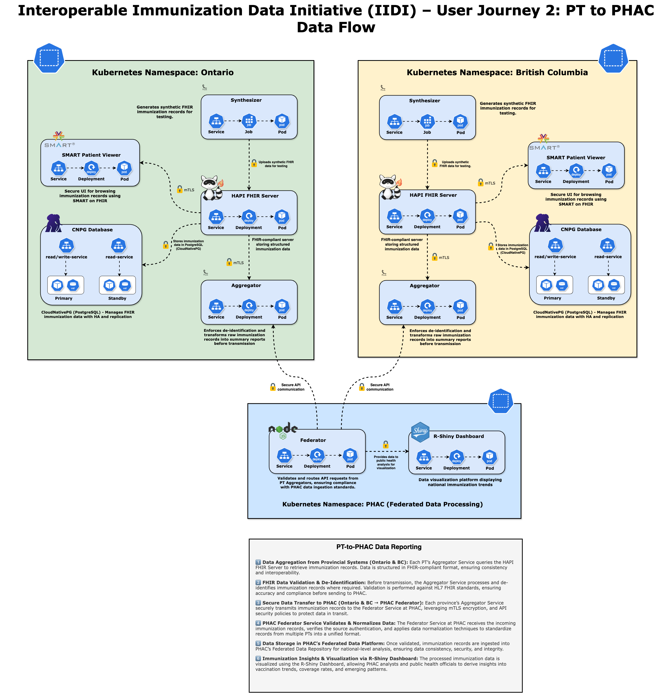

Interoperable Immunization Data Initiative (IIDI) – User Journey 2: PT-to-PHAC
Technical Architecture and Implementation Strategy User Journey 2 (PT to PHAC)

1. Introduction
The Interoperable Immunization Data Initiative (IIDI) is designed to enable secure, federated, and privacy-compliant immunization data sharing between Provincial/Territorial (PT) health systems and the Public Health Agency of Canada (PHAC). This initiative follows a distributed architecture, ensuring that each PT retains full control over its immunization records while allowing for standardized reporting and analytics at the national level.
A core principle of IIDI is that PHAC does not access, store, or process personal health information (PHI). Instead, all de-identification and aggregation occur at the PT level before data is transmitted. This ensures that only pre-processed, anonymized immunization summaries are shared with PHAC, aligning with federal and provincial privacy policies.
This document provides an in-depth technical breakdown of the IIDI architecture, detailing how Kubernetes, CloudNativePG (CNPG), Flux, Kustomize, GitOps, FHIR, and SMART on FHIR technologies are leveraged to build a scalable, secure, and future-proof immunization data-sharing ecosystem.
2. Deployment Architecture & Kubernetes Infrastructure
2.1 Kubernetes Architecture and Namespace Isolation
The IIDI infrastructure is fully deployed on Google Kubernetes Engine (GKE) with namespace-based isolation for each participating PT. Each PT operates within its own namespace, containing:
- HAPI FHIR Server – The core immunization record repository.
- CloudNativePG (CNPG) Database – A Kubernetes-native PostgreSQL instance for structured immunization data storage.
- FHIR Aggregation Services – Microservices for processing and anonymizing immunization data.
- SMART on FHIR Patient Viewer – A secure web-based application for browsing FHIR immunization records.
Namespaces are secured using Kubernetes Role-Based Access Control (RBAC), NetworkPolicies, and Anthos Service Mesh (ASM), ensuring that PT workloads are fully isolated.
2.2 GitOps-Driven Deployment with Flux & Kustomize
All deployments follow a GitOps model using Flux and Kustomize, ensuring that application configurations remain declarative, version-controlled, and continuously reconciled with production environments.
- FluxCD: Automates deployments by continuously monitoring GitHub repositories for configuration changes.
- Kustomize: Enables environment-specific overlays, allowing PT-specific variations while maintaining a consistent core deployment structure.
- Cloud Build: Handles CI/CD pipelines, ensuring that image builds, and infrastructure changes are validated before deployment.
This declarative, version-controlled approach ensures that all changes to the system are traceable, reproducible, and securely managed.
3. CloudNativePG (CNPG) for Immunization Data Management
3.1 Why CloudNativePG?
IIDI leverages CloudNativePG (CNPG) as a Kubernetes-native PostgreSQL operator, ensuring high availability, automated failover, and seamless integration with Kubernetes workloads. CNPG was chosen over traditional PostgreSQL deployments because:
- It follows the Kubernetes Operator pattern, making PostgreSQL a first-class citizen in Kubernetes.
- It enables self-healing and automated failover, ensuring high availability without external dependencies.
- It integrates directly with Kubernetes Secrets, Persistent Volumes, and ConfigMaps for seamless scaling and resilience.
3.2 CNPG Database Architecture
Each PT namespace contains its own CNPG database cluster, which stores FHIR-compliant immunization records.
- Automated Failover & High Availability: If a primary node fails, CNPG automatically promotes a new primary, ensuring minimal downtime.
- Streaming Replication & Read Scalability: CNPG supports read-only replicas, optimizing performance for real-time analytics and reporting queries.
- Rolling Updates & Immutable Containers: PostgreSQL containers are updated using zero-downtime rolling upgrades, ensuring continuous availability.
Access to CNPG is strictly governed via RBAC policies, ensuring that only authorized services (FHIR API, Aggregator, Federator) can query data.
4. Immunization Data Processing & Aggregation
4.1 Synthetic FHIR Data Generation
Since this phase of the project is a controlled simulation, real patient data is not used. Instead, a Flask-based Kubernetes Job (Synthesizer) generates FHIR-compliant synthetic immunization records.
- Uses Faker (Python) to generate realistic FHIR Patient, Immunization, and AllergyIntolerance resources.
- Uploads the generated data to the HAPI FHIR Server via FHIR transaction bundles.
- Ensures that FHIR resource structures align with PT-approved schemas, maintaining consistency across jurisdictions.
4.2 Aggregation & Data Standardization
Once immunization records are ingested, the Aggregator microservice processes and standardizes data before submitting it to PHAC.
- FHIR Data Extraction: Queries the HAPI FHIR Server for Immunization and Patient data.
- De-identification & Grouping: Data is categorized by:
- Jurisdiction (BC, ON)
- Occurrence Year
- Age Group
- Sex
- Vaccine Type
- Dose
- API Endpoint (
/aggregated-data): Exposes the processed dataset via a REST API, caching results to improve performance.
All aggregation happens within PT namespaces, ensuring that PHAC only receives high-level, de-identified summaries.
5. Secure Data Federation & Reporting
5.1 Federated API Gateway
Once PT data is aggregated, it is securely transmitted to PHAC via the Federator component.
- Role: Serves as an API Gateway, securely routing PT aggregation services to PHAC.
- Security:
- Mutual TLS (mTLS) encryption ensures end-to-end security.
- Ingress controls with fine-grained RBAC ensure minimum-privilege access.
5.2 R Shiny Dashboard for Visualization
- Queries the Federator API for real-time immunization insights.
- Displays statistics per jurisdiction, age group, and vaccine type, supporting national public health monitoring.